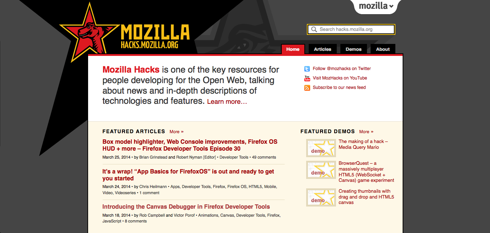
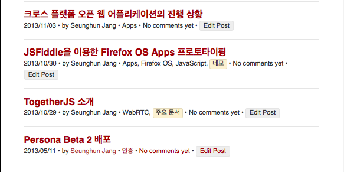
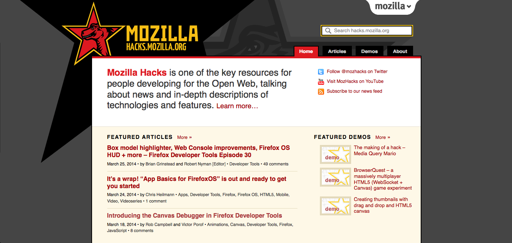
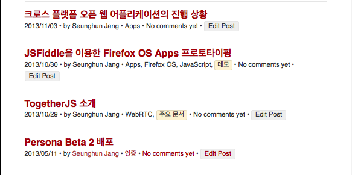

Hacks 기술 블로그
장승훈 - Creative Commons Korea
hacks.mozilla.org

hacks.mozilla.or.kr
2013/5/11 App Day

Hacks, SUMO, Product, Vervatim......
번역, 번역, 버녁..버녁......
번역 커뮤니티...?
동기 부여
- 시험 기간
- DAUM Deview 2013
- 희소성
- 관심
- 영어공부
- 웹기술
- Mozillan!


